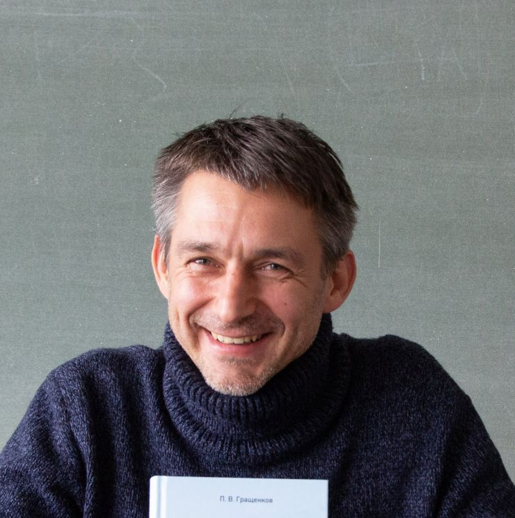
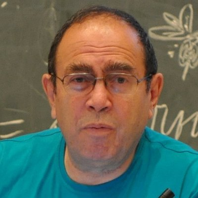
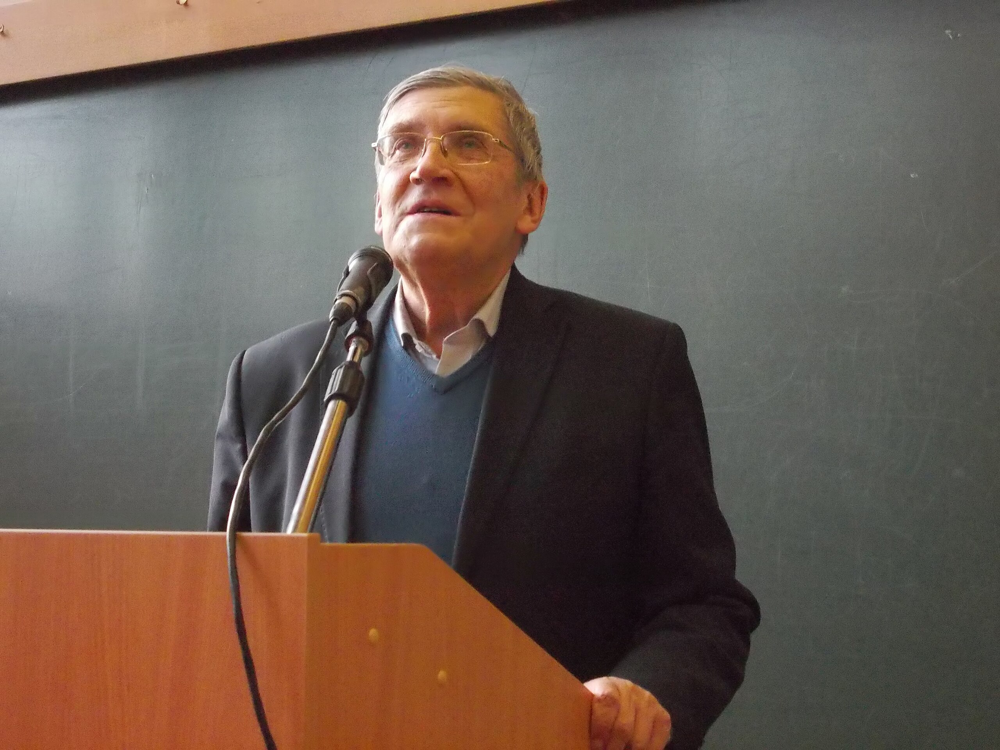

TMP 2012 Plenary Speakers
James Lavine
Affiliation: Bucknell University Research Interests: Syntactic Theory, Syntax/Argument-Structure Interface, Syntax/Semantics of Event Structure, Case Theory, Predication, Slavic Comparative Linguistics, Lithuanian Syntax. Education:
Research Positions:
Academic Service: Vice President (Linguistics), American Association of Teachers of Slavic and East European Languages (AATSEEL) 2010-2013. Member, Editorial Board, Journal of Slavic Linguistics. Ad Hoc Reviewer for major linguistics journals including Language, Natural Language and Linguistic Theory, Journal of Linguistics, Syntax, and others. |
Pavel Valerievich GrashchenkovAffiliation: Institute of Oriental Studies RAS Research Interests: linguistic typology, theory of grammar, syntax, grammatical changes. Education: Graduated from the Faculty of Philology at Lomonosov Moscow State University. In 2006, he defended his candidate dissertation on "Syntax and typology of the genitive group". Positions and Project Participation:
|
Leonid Leibovich IomdinYears: (1947–2024) Affiliation: Kharkevich Institute for Information Transmission Problems RAS Specialization: Linguist, specialist in syntax, semantics, lexicography and computational linguistics Research Interests: syntax, semantics, lexicography, computational linguistics, corpus linguistics. Leonid Leibovich Iomdin was a student and closest colleague of Academician Yu. D. Apresyan and co-author of many of his projects, primarily the New Large English-Russian Dictionary and the ETAP linguistic processor. Under the leadership of L. L. Iomdin, the deeply annotated Russian language corpus SynTagRus was created. Professional Activities:
|
Vladimir Mikhailovich AlpatovAffiliation: Academician of the Russian Academy of Sciences, Head of the Department of Languages of East and Southeast Asia, Chief Research Fellow of the Research Center for National-Language Relations, Institute of Linguistics RAS Research Interests: general and oriental linguistics, history of linguistics, Japanese language, sociolinguistics, theory of parts of speech. A prominent scholar in the field of general and oriental linguistics, one of the recognized specialists in the history of linguistics in Russian science. At the Institute of Linguistics since 2012. Education and Career:
Author of a textbook on the history of linguistic theories that has gone through several editions, monographs on M. M. Bakhtin, V. N. Voloshinov, N. Ya. Marr, and others. Known as the author of many linguistic problems. |
Yury Alexandrovich Lander
Affiliation: HSE University, Institute of Oriental Studies RAS — Research Fellow at the Department of Languages of the Peoples of Asia and Africa, Institute of Oriental Studies, Russian Academy of Sciences; Lecturer at RSUH and HSE University Research Interests: syntactic and lexical typology, Austronesian languages, Caucasian languages, field linguistics. Education and Career:
Field Work: Since 2002, conducts active field work related to the documentation of Adyghe, Kabardian-Circassian, Udi, and Dargwa languages. |
|